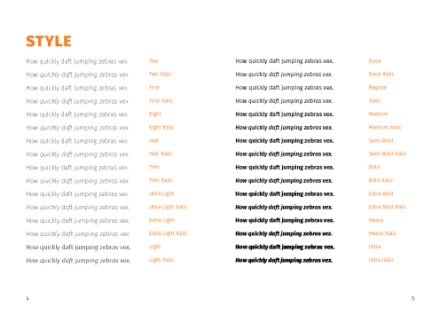
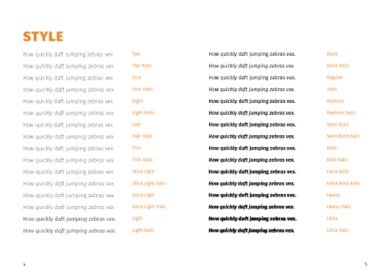
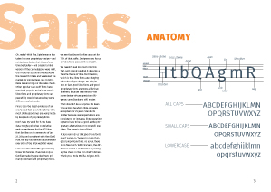
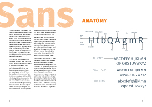
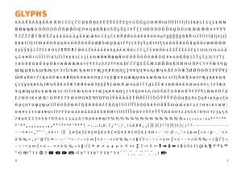
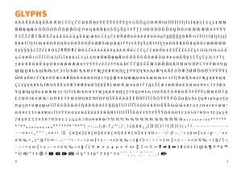
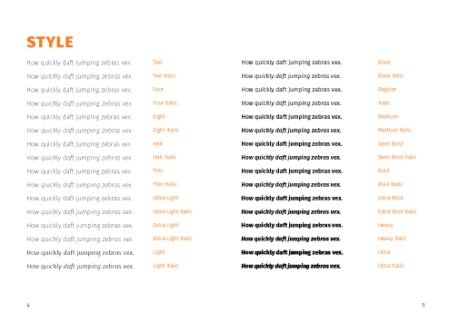
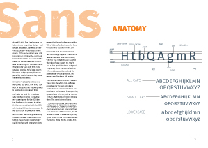
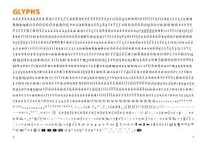

 

 

Our Assignment: Create a 12 page booklet that displays and shows the usage of a certain typeface.
Typeface: Fira Sans
Finished: May 2017
This project was great because you just got to design whatever you wanted, whatever that typeface was made for. It made me have a deeper understanding of type and a love for fira sans.


